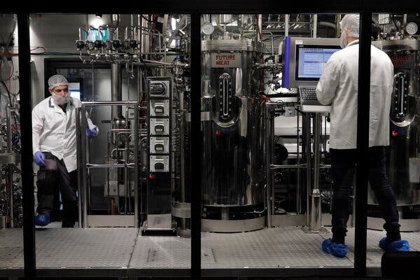

TL;DR: Cultured meat is often promoted as a sustainable alternative to traditional livestock farming. But is it better for the environment? Direct comparisons are complex, but cultured cells require as much nutrition as animals, with much more refined nutrients. Bioreactors would need to be complex to recapitulate what livestock does naturally.
Today, I’m covering another lead from the Sunday New York Times . It was the only front-page article not about politics or war! I was drawn to an article titled “ After We Exhaust the Earth’s Limits, Bioreactor Beef Might Be Next on the Menu. ” The article’s author is Somini Sengupta , an Indian-born English major from Berkeley. I mention that for context simply because we have yet another article written about climate by an author who lacks formal scientific training. Her heritage is part of her article, so I thought it was appropriate to mention it here.

As a scientist, the title itself raises all kinds of issues. First, it’s about the future and conditional, like “After you run out of savings, you might win the lottery.” Second of all, what limits are we talking about? And, when we hit them, how could “bioreactor beef” (essentially cultured meat) possibly be an answer?
It reveals naivete about an essential Law of Nature, namely, “conservation of mass.” This Law says that while the form of matter can change (through evaporation or chemical reaction, for example), mass doesn’t miraculously appear or disappear. This may be counterintuitive to English majors since plants seem to grow out of thin air. But, it’s been known for centuries that plants absorb everything they need to grow from the environment (most notably carbon dioxide and nitrogen).
The question remains: If Earth runs out of food for livestock, how could growing animal cells in a bioreactor fix that problem? Cells need nutrients, too, and bioreactors can’t somehow create something from nothing.
The general argument put forth by proponents of cultured meat hinges on efficiency. To grow livestock, only a fraction of the nutrients go into creating the meat we eat. Other nutrients are “wasted” by creating bones or beaks (for example) that we can’t eat. By growing meat in reactors, the argument goes, more nutrients can go to “product” than “waste”.
To estimate the efficiency of modern meat production, consider that about 2/3 of a cow’s weight is meat (3/4 for chicken), and it takes about 4 pounds of feed to add a pound to a cow (2 pounds for chicken). However, not all of the nutrients provided to bioreactors are converted into products—some inputs are needed for energy to drive the process. It’s a rough guess, but the added efficiency of cultured meat might convert another 50% of inputs into products, doubling the relative value of the process. It’s a squishy number but a starting point for comparison.
But the inputs aren’t identical. Cows are fed a balanced vegetarian diet nutritionally optimized for weight gain. The diet provides both the mass and energy for meat production and is entirely renewable. In contrast, bioreactors are fed with growth media, and mixing is powered by grid electricity that may not come from renewable sources. Cultured meat requires purified, sterile inputs that can be absorbed by growing cells. Because the culturing process doesn’t need a digestive tract, to compare them side by side, we have to step further back to the point where the two methods diverge. That’s a more complicated comparison than I’m prepared to do here, but moving the starting point to suit a particular narrative is simplistic deception. Choosing common starting points makes for rational, cleaner choices.
Most of the inputs for cultured meat are created biologically through fermentation. Hence, to compare the two processes head to head, we must start where they diverge, with sunlight and photosynthesis. For the cultured process to show higher conversion efficiency than livestock, it can only afford to lose about half of the carbon captured from photosynthesis. I’m incredibly skeptical that the math will work out because even the highly optimized bioconversion process of converting sugar to alcohol has a maximum theoretical mass yield of just over 50%. In principle, I’m persuadable, but there are a lot of holes.
From an engineering cost perspective, a cow is a near-perfect meat-creating machine. It is self-sterilizing and self-replicating. It requires minimal capital and labor to run. It uses fully renewable (plus raw and potentially variable) inputs, most of which humans would not eat and some of which humans cannot even digest. Further, it can transport itself to a centralized processing facility using entirely renewable energy. But the devout environmentalists don’t view it from such a dispassionate engineering perspective—they amplify the environmental downside of livestock production relative to its benefits, pointing instead to the undeniable efficiency of eating a vegetarian diet ourselves, which is preferable to passing the same nutrition through livestock as an intermediate. However, using this fact to change the outcome requires the most challenging engineering process: Modifying human behavior.
In the end, Ms. Sengupta cannot resist a political angle. Florida and Italy have banned cultured meat products (not yet commercially available), while Israel, Singapore, South Korea, and China actively support a transition. But, to be fair, she makes several quantitative points in the text.
Meat production today accounts for somewhere between 10 and 20 percent of total greenhouse gas emissions, depending on how you measure it. Reducing those emissions is vital if the world is to reduce the hazards of planetary heating.
This flawed accounting has two components: land use change (which I’ve covered in some detail and remain puzzled by) and methane emissions. It’s generally accepted that methane is the primary emission from livestock agriculture. It is roughly 30 times more potent than CO2, so it’s a fair consideration. I wonder, however, if the counterfactual experiment has been considered: Methane production by cows comes mainly from the anaerobic digestion of cellulose. The alternative isn’t for us to eat cellulose instead (we can’t digest it); it is to let it decompose naturally. How much of that process releases methane? I imagine that it would be difficult to quantify, and the only process considered by the IPCC’s models is rice cultivation, which is also a significant contributor to methane emissions.
More importantly, Ms. Sengupta notes the cultural problem:
I understand the meaning of meat. I grew up eating it. My father prepared giant vats of goat curry for Durga Puja, the most auspicious holiday in the Bengali Hindu calendar. For family birthdays, we ordered shredded pork at our favorite Sichuan restaurant. When we could splurge, we got dressed up for steak. My greatest pleasure on a cold winter’s night is still a burger, medium rare, with a whiskey, neat.
For many of us, meat carries memories. It signals who we are. It is the stuff of a Juneteenth barbecue. It’s Thanksgiving turkey. Biryani for Eid.
But we are now confronting nature’s limits. There simply isn’t enough land or water on Earth for the world’s 8 billion people to eat meat like Americans. That reality is crashing against our love of flesh, and it’s going to force us to reconsider our relationship to it once again.
She has a point: Meat has a cultural value that will be difficult for many to replace. But will we run out of land to grow meat? Where does that factoid come from?
The amount and quality of land required for meat production differ dramatically depending on the meat being grown. For example, cows need a lot of land area but can digest cellulose grown in arid grasslands, using land otherwise useless for growing crops. Chickens and pigs are more efficient per acre but cannot digest cellulose, so they compete more directly with the human food supply. Pigs, in particular, are interesting because they can be fed food waste, an ancient practice that does not use any land and recycles all the nutrition we waste. If everyone switched to an American diet, we would run out of resources if nothing else changes. But that’s not too surprising.